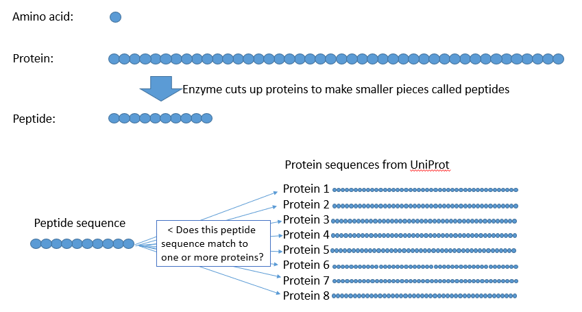
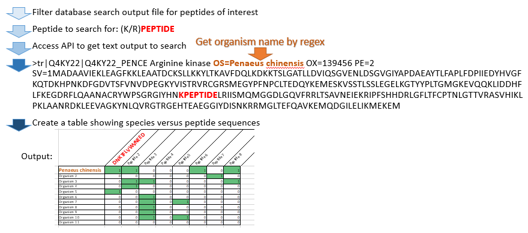

Agriculture and Food

Introduction
I am an analytical chemist from the Molecular Analysis Team in St Lucia, QLD. Our team specializes in proteome analysis, the large scale investigation of proteins. I had some experience with R prior to dataschool but now I am also happy to write in Python and see opportunities to code everywhere!
My Synthesis Project
Food contaminants are a common cause of alergic reaction. Accurate food labelling is critical for consumers to make informed decisions regarding their choice of foods. Our laboratory specialises in the detection of food components or contaminants using the analytical chemistry technique known as liquid chromatography - mass spectrometry. The specific components that we detect are called peptides. These compounds are bio-polymers, which are produced when proteins are chopped into smaller pieces using an enzyme. The resulting peptide sequences may be specific to a single protein in a single species, or may be found in multiple different proteins and/or species. It is important to know how many and which species a peptide may be found in, so that when a peptide is used to detect and quantify a contaminant, one can be certain that the peptide is specific for the target contaminant.
This project set out to access the Universal protein resource (UniProt) to retrieve species specificity information for any list of peptides. This information can then be used to determine if a peptide is suitable as a proxy when measuring a food component or contaminant.
My Digital Toolbox
This project makes use of the Python language and was developed in the Jupiter Notebooks environment. It uses a suite of libraries to work with Microsoft Excel input and to manipulte the data.
One critical tool that I learned during this project was requests. This library enabled me to access an Application Programming Interface (API) that interacts with the UniProt. I was then able to build code around the idea of accessing this API to search massive amounts of up-to-date data (~500,000,000 sequences) quickly.
In addition to the requests library, I also used the following libraries for various data munging, manipulation and visualisation tasks, including: sys; re; requests; numpy; pandas; functools; time; glob; matplotlib; and, seaborn
Prior to data school, I hadn’t writen a single piece of Python code. Now it may even be my favourite language!
Favourite tool
I could not have made this project work without regex. It is so powerful at extracting exactly what you need from the mess that the UniProt API spits out. Check out Regex101.com for troubleshooting; it made a big difference for me.
Challenges
My main challenge was in creating regex that worked how I needed them to. I spent a lot of time making a very large regex that (eventually) did what I needed it to; however, a quick lesson from Andrew went a long way.
My next challenge is to launch the tool onto the HPC. It works really well for a small to medium number of variables but it will be great to be able to scale the process up to any number of variables.
What we want to know

Getting the information I need

Next steps
This project has helped me to acquire a really good understanding of how to use APIs to access information from remote data sources. It has worked really well so far for small scale lists of peptides; however, when scaling up, the time required to complete the for loop blows out. To get around this I am exploring how to launch a HPC enabled version that can send many requests to the API at the same time.
I have also been creating a suite of tools for our laboratory to use for automating manual point-and-click processes. Time saved so far = 5 days!
My Data School Experience
Data school has been a great environment to learn from the instructors but also from each other and through how the other students learn as well. Getting to know the other folks taking part was certainly a highlight, especially being able to meet up in Canberra and learn about what everyone does and is looking for in learning data science.
It’s definitely a bit full on at the start when learning all of the different elements, such as: R, Bash, Git, Python, SQL, Regex… but the seeds of all of those bits of knowledge really take shape when the project work starts, whether it’s the big data project or the final synthesis project.
Now when I’m looking at any specific task the first thing that I do is ask myself: “Am I better off scripting this?”; my manager has also started to ask the same thing and we’re really changing the way our team works when it comes to data analysis and saving time!